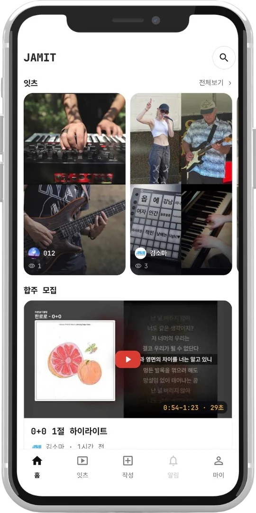
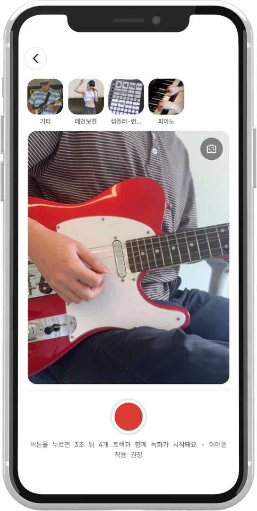

나만의 연주를
업로드하세요
기타면 기타만, 드럼이면 드럼만. 나머지 파트는 나중에 고르면 돼요. 실수해도 괜찮아요. 마음에 들 때까지 다시 찍으세요.


치고 싶은 곡, 그 곡을 아는 사람, 내 실력을 기다려 줄 사람,
같은 날 칠 수 있는 사람이 동시에 있어야 합니다.
치고 싶은 곡은 정했는데, 그 곡을 칠 사람은 주변에 없습니다.
나 하나 때문에 곡이 멈추는 자리에는 가지 않게 됩니다.
같은 날 같은 방에 다 모여야 가능합니다. 한 명만 빠지면 합주는 없습니다.
기타도 베이스도 드럼도 다 모였습니다.
그런데 이 곡을 연주할 사람이 없어서, 결국 늘 치던 곡으로 돌아갑니다.
한 마디를 틀리면 다섯 명이 같이 멈춥니다.
다시 하자는 말을 꺼내기가 점점 어려워지고, 다음에는 안 나가게 됩니다.
자기 파트 하나를 올리세요.
그 곡을 이미 올려둔 사람 중에서 고르세요.
나머지는 모두 JAMIT이 합니다.
급구
합주 곡 정해져 있습니다
그 곡 카피 가능하신 분
주 1회, 홍대 근처
기타면 기타만, 드럼이면 드럼만. 나머지 파트는 나중에 고르면 돼요. 실수해도 괜찮아요. 마음에 들 때까지 다시 찍으세요.
다른 사람이 올려둔 연주 중에서 마음에 드는 걸 고르기만 하면 돼요.
그렇게 총 아홉 명까지 함께 할 수 있어요.
고른 수에 맞춰 화면이 나뉘고, 소리도, 영상도 모두 하나로 만들어요.
음향 조절도, 믹싱도 자동입니다 — 복잡한 편집 앱은 꺼두세요.
한 번도 만난 적 없는 사람들이 한 화면에서 같은 곡을 연주합니다.
약속도, 합주실도 없이 합주 하나가 끝났어요.
이렇게 완성된 합주 영상 한 편을 잇츠라고 불러요.
출시 알림 받기잇츠 · 두 명 · 00:15
지연은 간편히 측정하고, 음향은 악기에 따라 자동 조정합니다.
누구도 눈치 주지 않습니다.
기타면 기타만, 드럼이면 드럼만. 나머지 파트는 나중에 고르면 됩니다.
이미 올라온 트랙 중에서 고르기만 하면 됩니다. 그 곡 칠 사람을 구하러 다닐 필요가 없습니다.
자르기·맞추기·합치기·내보내기까지, 잇츠 한 편이 JAMIT 안에서 끝납니다.
앱에 게시하여 결과물을 공유할 수 있습니다.
그 곡을 같이 칠 사람을 못 구했을 때. 이미 올라와 있는 파트에 얹으면 됩니다.
사는 곳이 다르고 시간이 안 맞아도, 각자 자기 파트를 찍어 올리면 한 곡이 됩니다.
합주실에서는 다시 하자는 말을 꺼내기 어렵습니다. 여기서는 마음에 들 때 올리면 됩니다.
한 파트를 끝까지 연주할 수 있으면 됩니다. 마음에 들 때까지 다시 찍어도 아무도 안 기다립니다.
휴대전화와 이어폰이면 충분합니다. 오디오 인터페이스가 있으면 소리가 더 좋아지지만, 없다고 못 하는 건 아닙니다.
공개로 올라온 트랙 중에서 고르기만 하면 됩니다. 고른 트랙과 내 트랙을 앱이 자동으로 맞춰 하나로 합칩니다.
JAMIT에서 완성된 합주 영상 한 편을 부르는 이름입니다. 인스타그램의 릴스, 유튜브의 쇼츠처럼 JAMIT에는 잇츠가 있습니다. 짧고, 세로로 보고, 여러 사람의 연주가 한 화면에 들어 있습니다.
올릴 때 공개 범위를 직접 정합니다. 공개로 두면 다른 사람이 자기 합주에 가져다 쓸 수 있고, 비공개로 두면 나만 봅니다. 내 연주가 어떤 합주에 들어갔는지는 앱에서 확인할 수 있습니다.
아홉 명까지입니다. 혼자 올려도 되고, 고른 수에 맞춰 화면이 알아서 나뉩니다.
2026년 9월 중순 정식 출시를 목표로 개발 중입니다.
두 플랫폼 모두 지원합니다.
출시하는 날 이메일 한 통을 받습니다. 그게 전부입니다. 광고나 소식지는 보내지 않고, 보낸 뒤에는 주소를 파기합니다.
JAMIT에서 함께 하세요.
수집 항목은 이메일 주소 하나입니다. 출시 알림을 한 번 보내는 데에만 쓰고, 보낸 뒤에는 바로 파기합니다. 그 전에라도 문의로 요청하시면 즉시 지워 드립니다.